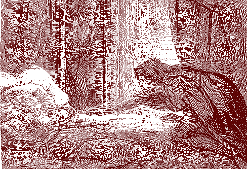
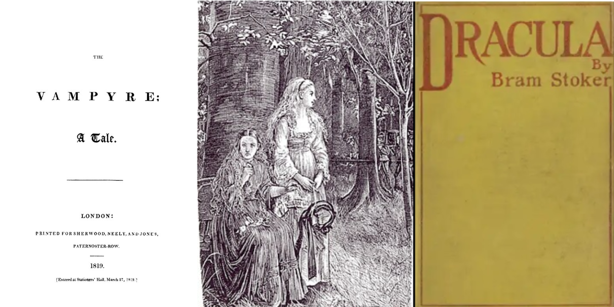

English Fictional Vampires Depicted in the 19th Century

My final project will focus on analyzing the depiction of fictional vampires in the 19th century and connect it to real world events happening to society during that time, or how those depictions reflect our society during the era it was written in. I will be drawing from the three texts, The Vampyre by John Polidori published in 1819, Carmilla by Sheridan Le Fanu published in 1872, and a known classic Dracula by Bram Stoker published in 1897. With these texts I will focus on certain languages used to describe the vampire. The tools I plan to use throughout this project are Voyant and either Google My Maps or StoryMaps. I plan to use Voyant in order to identify common words used throughout each of the texts and point out a certain pattern or theme that can be seen in each of these texts about fictional vampires. My goal with the mapping tools, however, is to connect the fictional world of these vampires to reality. By mapping out the locations mentioned in the setting of these texts, we can apply historical context and create inferences.
Text Summaries

The Vampyre is a novella written by John William Polidori in 1819, it’s widely considered to be the first vampire story in English literature–thus creating a foundation for the vampire archetype. The story follows Aubrey, an wealthy orphan, who travels with Lord Ruthven, a nobleman that Aubrey later learns is a vampire, throughout Europe. Key themes such as seduction, supernatural, and corruption are present within the text.
Carmilla is a novella written by Joseph Sheridan Le Fanu in 1872, it’s considered to be another foundation for English vampire literature. The story is narrated by the main protagonist Laura who desperately befriends Carmilla after finding her in a carriage, because of her desire for companionship. Throughout the novella key themes of isolation, sexuality, and the supernatural.
Dracula is an epistolary novel written by Bram Stoker in 1897, one of most well-known English vampire literature. The story is told through a series of documents–the primary form being letters. Ultimately, Count Dracula, the vampire and antagonist of the story, wants to spread vampirism throughout Europe, while other characters such as Jonathan and Abraham fight against his invasion. The novel contains key themes of sexuality, supernatural, religion, and invasion.
Section Heading
Add your project content here. This template provides a single-column layout for detailed project descriptions, research findings, or supporting imagery and links. This is how you would format a link to Voyant for example.
You can add multiple paragraphs to organize your content. Each paragraph will have appropriate spacing for readability.
Section Heading
Add your project content here. This template provides a single-column layout for detailed project descriptions, research findings, or supporting imagery and links. This is how you would format a link to Voyant for example.
You can add multiple paragraphs to organize your content. Each paragraph will have appropriate spacing for readability.
Section Heading
Add your project content here. This template provides a single-column layout for detailed project descriptions, research findings, or supporting imagery and links. This is how you would format a link to Voyant for example.
You can add multiple paragraphs to organize your content. Each paragraph will have appropriate spacing for readability.
Bibliography
Continue adding sections as needed for your project documentation. The monospace font and clean layout maintain consistency with the main portfolio page.
This template is fully responsive and will adapt to different screen sizes while maintaining readability and visual hierarchy.
← Back to Projects